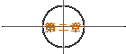 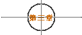 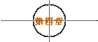 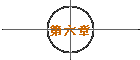 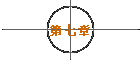 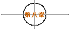 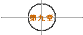 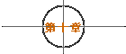 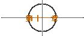 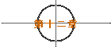 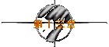
后来奥斯卡金像奖揭晓..“铁达尼号”囊括最佳影片等11项大奖。 但是Rose并没有拿到奥斯卡最佳女主角奖.. 连老Rose也是一样..与奥斯卡最佳女配角奖擦身而过。 原来在电影里悲惨的，在人生中也未必不倒霉。 而现实生活中的Jack，到底应不应该对Rose“Never let go”呢？.. 也许他不必担心这个问题.. 因为那只美丽的咖啡色蝴蝶..永远在他心中翩翩飞舞著...... jht. 于 1998/5/29 ～ The End ～